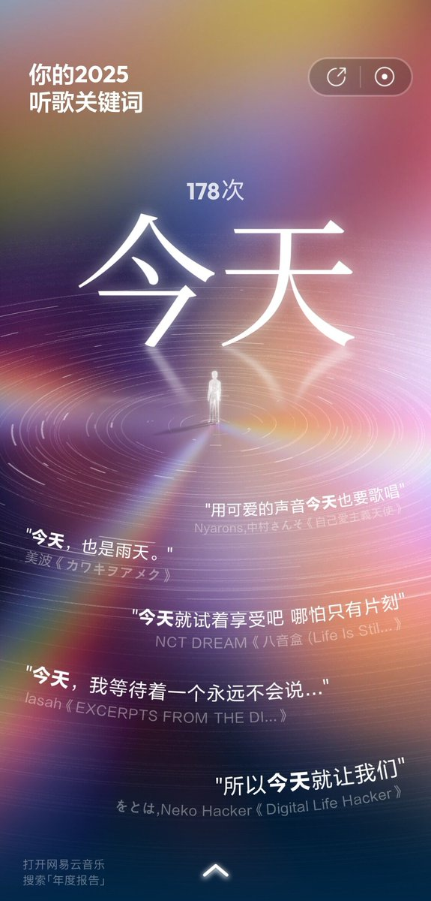

我纠结过去，无数次惋惜哭泣痛苦感伤。我担心未来，一直在焦虑幻想彷徨害怕。但过去是无数个今天的堆砌，未来是无数个今天的展望。一切的一切都在于今天。如果想做些什么，不如就今天。昨天已成过去，明天远在将来。现在，是今天。人是只能活在当下的时间锚点的。这是我去年一整年想通的最令我安心的事


我本来对今年的年度报告不抱什么希望，因为我今年没有怎么用手机听歌都是用音响放。但是这个词出来的时候还是给我一个惊喜，我本来以为今年是像之前一样“生命、活着、希望、世界”这种给我鼓励的词。没有想到是“今天”但是确实准的要命。“今天”在我过去的一年里，有很大的意义 https://t.co/eQCN9f1WNW